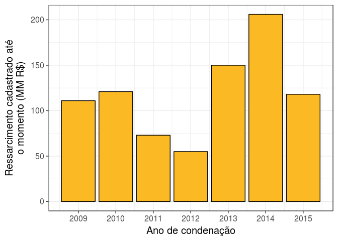
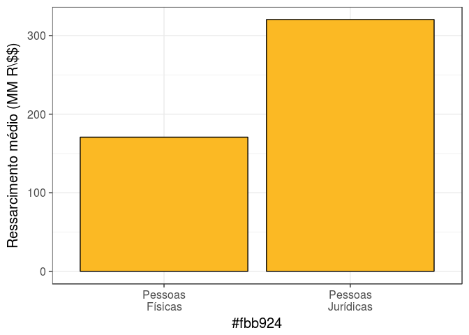
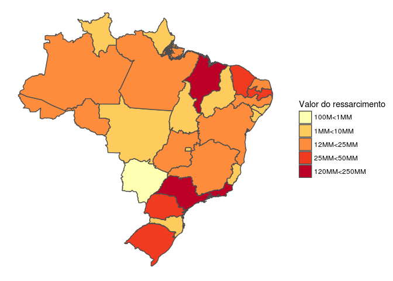
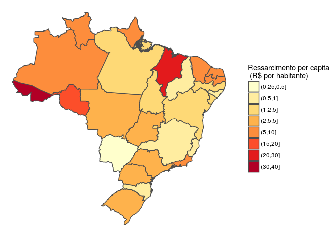

always_allow_html: True author: Frida Gomam categories: - R date: ‘2015-07-23T21:13:14-05:00’ draft: False image: ‘img/portfolio/a4-paper.jpg’ tags: - oi title: Danos weight: 0 …
Todo os anos, em média 658 pessoas são condenadas por improbidade administrativa no Brasil. Aproximadamente 81.5% dos condenados são obrigados a ressarcir integralmente os danos causados, que ao longo da história do CNIA já somam 835 milhões de reais. Só em 2013 e 2014, a justiça brasileira já exigiu o ressarcimento de 350 milhões de reais.

| Ano | Mínimo | 1º Quartil | Mediana | 3º Quartil | Máximo |
|---|---|---|---|---|---|
| 2009 | 0 | 6 | 18 | 83 | 22521 |
| 2010 | 0 | 7 | 21 | 70 | 21333 |
| 2011 | 0 | 8 | 29 | 92 | 10517 |
| 2012 | 0 | 9 | 33 | 97 | 1826 |
| 2013 | 0 | 9 | 38 | 140 | 32606 |
| 2014 | 0 | 10 | 43 | 132 | 52046 |
| 2015 | 0 | 15 | 44 | 223 | 7771 |
As condenações estão dividas nos vários tipos de improbidade previstos pela Lei 8429 de 1992.
| Motivo da condenação | Frequência | % |
|---|---|---|
| Dano Ao Erário | 2169 | 47.1% |
| Violação Aos Princípios Administrativos | 1331 | 28.9% |
| Enriquecimento Ilícito | 475 | 10.3% |
| Improbidade Administrativa | 315 | 6.8% |
| Direito Administrativo E Outras Matérias De Direito Público | 265 | 5.8% |
| Outros | 51 | 1.1% |
| Motivo da condenação | Ressarcimento (MM R\$\$) | % |
|---|---|---|
| Dano Ao Erário | 511 | 61.3% |
| Violação Aos Princípios Administrativos | 179 | 21.5% |
| Improbidade Administrativa | 47 | 5.6% |
| Direito Administrativo E Outras Matérias De Direito Público | 46 | 5.5% |
| Enriquecimento Ilícito | 40 | 4.8% |
| Outros | 11 | 1.3% |
A administração municipal é a que mais sofre com as condenações por improbidade. Juntando os danos causados às prefeituras e aos municípios em geral, o CNIA estima essa perda em 381 milhões de reais.
| Órgão | Valor do ressarcimento (MM R\$) |
|---|---|
| Não Identificado | 314 |
| Prefeitura | 287 |
| Municipio | 94 |
| Outros | 42 |
| Caixa | 25 |
| Vereadores | 19 |
| Poder Executivo | 15 |
| Inss | 13 |
| Policia | 11 |
| Secretaria | 8 |
| Municipio, Prefeitura | 3 |
| Correios | 2 |
| Corpo De Bombeiros | 1 |
| Demei | 1 |
| Assembleia Legislativa | 0 |
| Detran | 0 |
| Pmsp | 0 |
| Poder Legislativo | 0 |
| Vereadores, Municipio | 0 |
| Órgão | Número de condenações |
|---|---|
| Prefeitura | 1572 |
| Não Identificado | 1445 |
| Municipio | 501 |
| Vereadores | 349 |
| Outros | 302 |
| Secretaria | 111 |
| Poder Executivo | 75 |
| Correios | 49 |
| Caixa | 43 |
| Inss | 39 |
| Municipio, Prefeitura | 39 |
| Policia | 25 |
| Corpo De Bombeiros | 11 |
| Poder Legislativo | 11 |
| Vereadores, Municipio | 10 |
| Detran | 8 |
| Assembleia Legislativa | 6 |
| Demei | 5 |
| Pmsp | 5 |
7.08% dos condenados por improbidade são pessoas jurídicas. Entretanto, essa proporção não se mantém quando analisamos os ressarcimentos: 12.5% do total a ser ressarcido vem de empresas. Pessoas juŕidicas, em média, são condenadas a ressarcir o Estado em R\$300.000,00.

A distribuição geográfica dos danos aumenta do norte para o Sul. No Sul e no Sudeste, os ressarcimentos por Estado ultrapassam 25MM, na maioria dos casos. No Nordeste, Roraima se destaca com um ressarcimento comparável ao de São Paulo, mas os estados com ressarcimento maior do qu 25 milhões de reais são mais raros.

Ao contrário do valor absoluto, a taxa de ressarcimento por habitante cresce do Sul para o Norte. A região com maior número de taxas acima de R\$5/habitante é a região Norte, que conta com Rondônia, Acre e Roraima, os estados de maior taxa, mas a Região Nordeste também se destaca.
